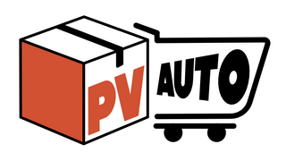
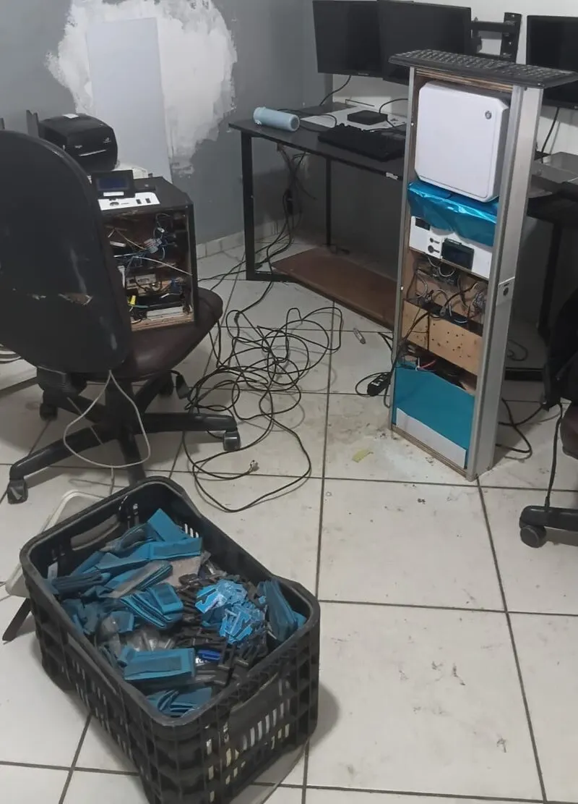
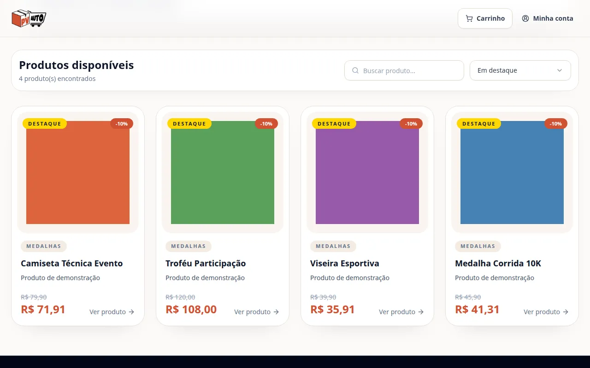
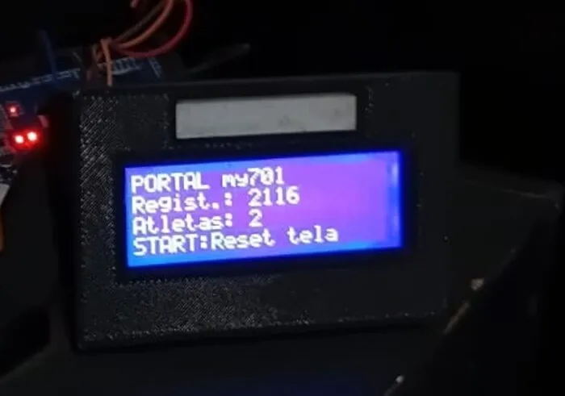
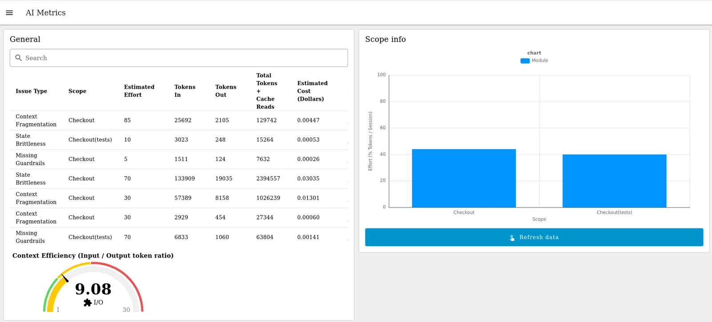

About me
Working on race timing since 2024
- projects on this site
- 6
- my age when I started programming
- 10
From 2024 to early 2026 I wrote the software for MyTempo's RFID timing portals. They read runners' bibs, store everything offline and upload the times later. Now I work with data at a university and study Computer Engineering.
Previously worked on

Projects
-

MonoTempo
Software for MyTempo's RFID timing portals. Stores every read offline, uploads later.
-

PvAPI
Go backend for a consignment marketplace: checkout, stock, earnings and withdrawals.
-

The Forth screen
The portal's LCD ran Forth. One word drew the screen; the others rewrote its bytes.
-
SAT solver
DPLL in Prolog. Solves all 1000 uf20-91 instances in about 22 seconds.
-

AI Metrics
A Node-RED dashboard of where a coding agent loses time.
-

raylib in LLVM IR
A bouncing square written by hand in LLVM IR.
Timeline
- 2021 – 2024Technical high school, IT support (CEEMTI Prof. Fernando Duarte Rabelo).
- Aug 2024Side project: raylib in LLVM IR.
- 2024 – 2026Software Engineer, Backend & IoT at MyTempo: MonoTempo, the Forth screen, PvAPI.
- Nov 2025Side project: SAT solver in Prolog.
- Jun 2026Systems Operator at Centro Universitário Vale do Cricaré. Side project: AI Metrics.
- Jul 2026Started a Bachelor's in Computer Engineering. LiFT Scholarship from the Linux Foundation; preparing for the CKA.